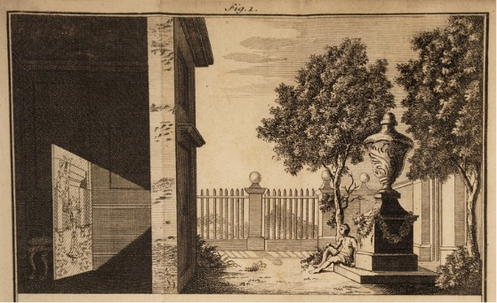
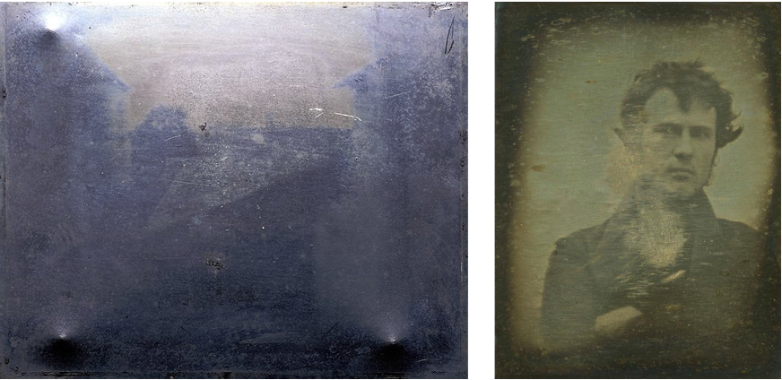
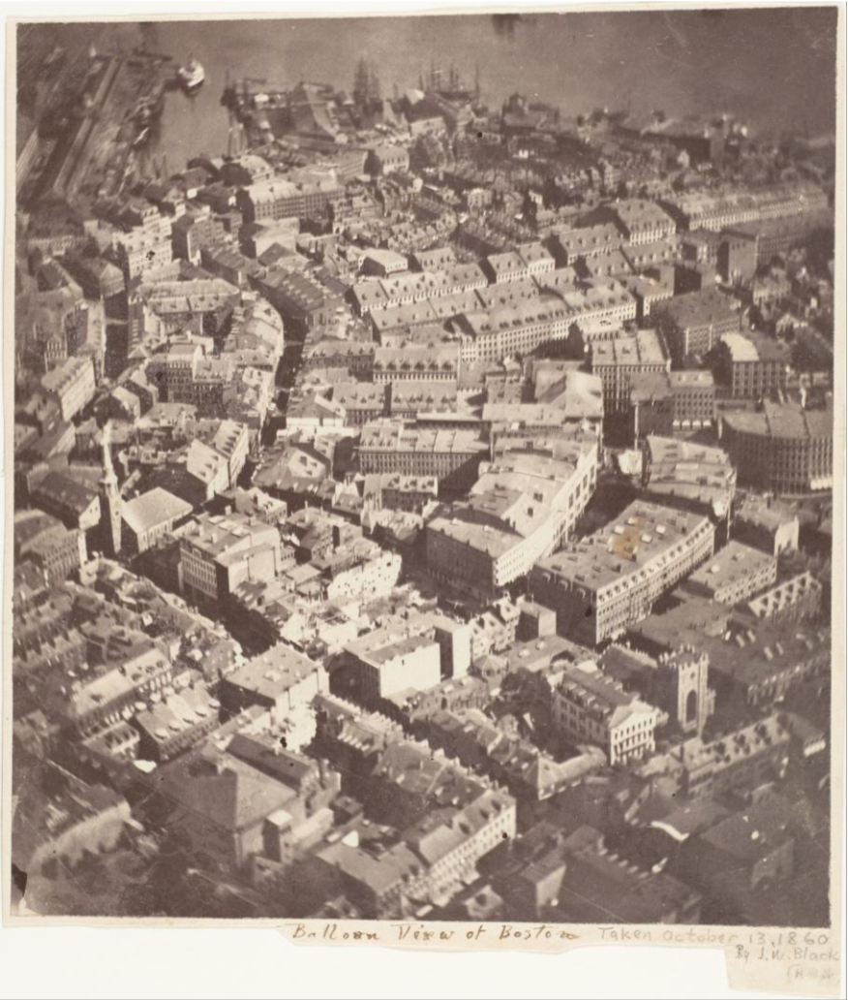
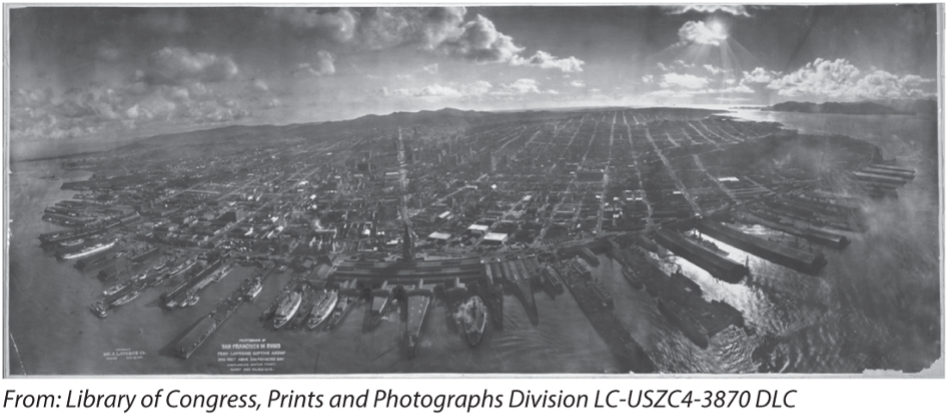
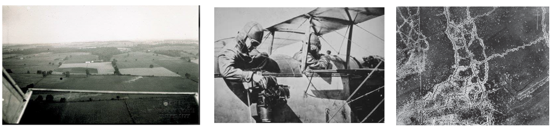
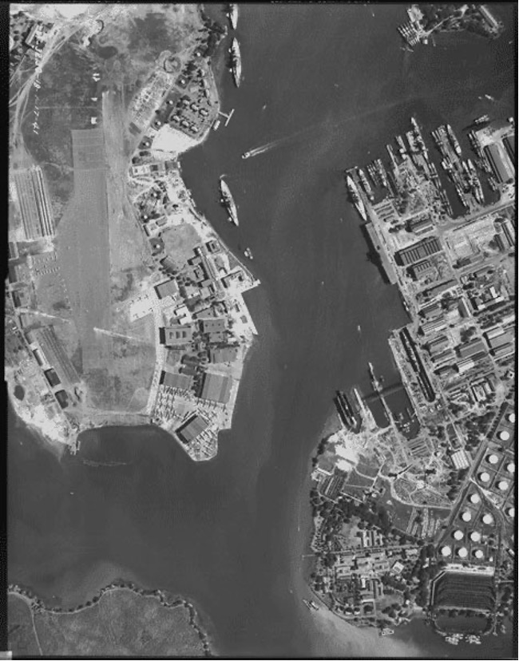
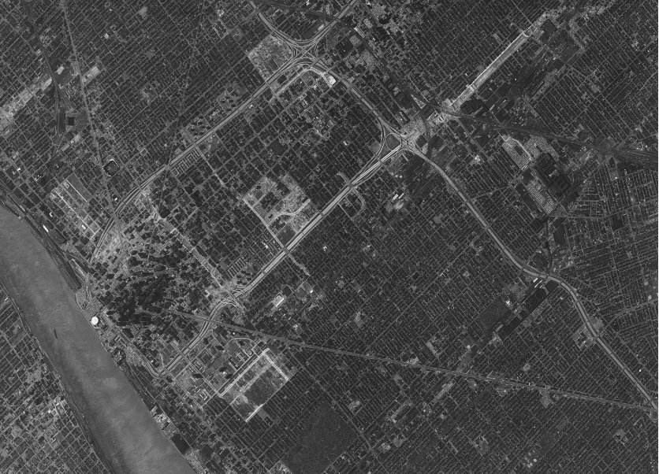

15 A Brief History of Remote Sensing
Understand key milestones in the development of remote sensing
Appreciate the evolution of remote sensing as an interdisciplinary field
The quote at the beginning is often attributed to Socrates (500 BC), while there are no clear clues indicating that he said or meant things in the same way as we understand. However, it does illustrate the idea that gaining perspective from space helps us better understand our own planet. Remote sensing, specifically earth observation, grants us this ability to observe the planet earth from above. In this chapter, we will illustrate how we, human beings as a group, get here through the last thousands of years by briefly discussing the history of the remote sensing.
Broadly speaking, remote sensing is an art, science, and technology of acquiring information about an object without being in physical contact with the target. In particular, remote sensing uses electromagnetic energy to measure the properties of distance objects (Moore 1979). Since the 1960s, remote sensing sensors have been operated across all of the electromagnetic spectrum. As Dr. Willian Pecora, director of U. S. Geological Survery, pointed in 1967, “Aerial photography and airborne geophysical surveying techniques have already increased the rate at which new knowledge of the world’s resources can be acquired. … Some of the further acceleration required can be obtained through use of remote sensing devices mounted in high flying aircraft and earth orbiting satellites.”
Although the history of remote sensing formally begins with photography, the underlying principle of image formation has been known for thousands of years. The concept of the camera obscura was described by ancient philosophers such as Mozi and Aristotle in the 5th to 4th centuries B.C. They observed that when light passes through a small aperture—like a pinhole—an inverted image is projected onto the opposite surface inside a darkened box or room Figure 15.1.

Practical photography required a permanent method of fixing the image, which didn’t happen until the early 1900 century Figure 15.2.

Meanwhile, the potential of aerial photography for topographic mapping was clear from the beginning. While airplanes were not available, photos were taken from ballons, kites, and pigeons Figure 15.3 Figure 15.4.


After Orville and Wilbur Wright achieved “the first successful sustained and controlled heavier-than-air human flight” in 1903, airplane was soon used in taking pictures from above and the development and application of this aerial photography technology was propelled during WWI due to its value in reconnaissance Figure 15.5. In fact, millions of aerial photographs were taken during the war.

The development of aerial photograph technology remained fast growing after WWI. In 1938, Werner von Fritsch, command-in-Chief of the German Army, predicted that “the nation with the best photoreconnaissance will win the war,” highlighting the importance of aerial photography. During the WWII Figure 15.6, aerial photography emerged as a key military asset. New technologies, including color infrared film and radar, are operationalized to gain a strategic advantage.

After WWII and through the Cold War, military photo interpreters apply their skills to civilian topographic mapping, geology, and engineering. Meanwhile, new platforms, such as spy planes (U-2) and satellites started to emerge. In the 1960s, the Corona program became the first operational imaging spy satellite, producing military maps of denied areas more accurate than ever before (CIA; CORONA: America’s first imaging satellite imaging program). Although the program remained highly secret for decades, it was officially declassified in 1995 (USGS 1995). Since then, CORONA imagery (1960-1972) has been made publicly available and is now widely used for scientific research, including studies of historical land use, environmental change, and urban development Figure 15.7. These data provide a unique snapshot of the Earth’s surface from the mid-20th century, offering valuable baseline information for long-term analysis.

Following the end of the Cold War, remote sensing entered a new era characterized by increased data availability, technological advancement, and expanded civilian applications. Satellite programs such as Landsat program (since 1972) continued to provide long-term, publicly accessible imagery, supporting environmental monitoring and scientific research worldwide. At the same time, improvements in sensor technology led to higher spatial, spectral, and temporal resolution, enabling more detailed observation of the Earth’s surface. The post–Cold War period also saw the rise of commercial remote sensing, with private companies launching high-resolution satellites for applications in mapping, agriculture, and urban planning. In 1986, France launched the first non-US, non-Russian satellite (SPOT) providing the highest resolution (10 m panchromatic), commercially available imagery at the time.
In recent years, the field has further evolved with the development of commercial airborne systems, small satellites and drone-based imaging, making data collection more frequent, flexible, and cost-effective. As a result, remote sensing has become an essential tool across a wide range of disciplines, from climate science and disaster management to resource monitoring and sustainable development. As Fred Hoyle, the British astronomer said: “Once a photograph of the earth, taken from outside, is available, a new idea as powerful as any in history will be let loose.”
References
Moore GK. What is a picture worth? a history of remote sensing. Hydrological Sciences Bulletin. 1979;24(4):477-85.
U.S. Geological Survey (USGS) EROS Center (EDC). 1995-02-24. CORONA Satellite Photographs. Sioux Falls, SD USA. Archived by National Aeronautics and Space Administration, U.S. Government, U.S. Geological Survey. http://earthexplorer.usgs.gov. Photographs.